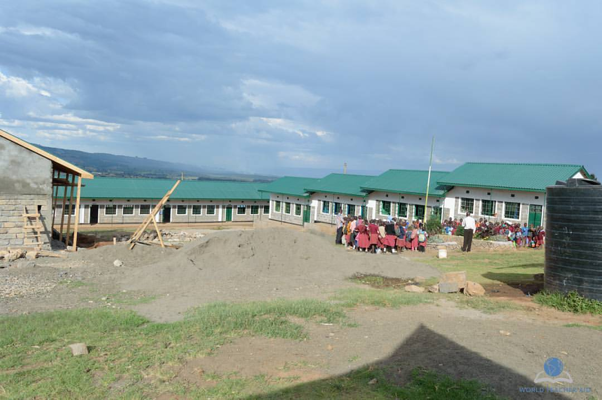
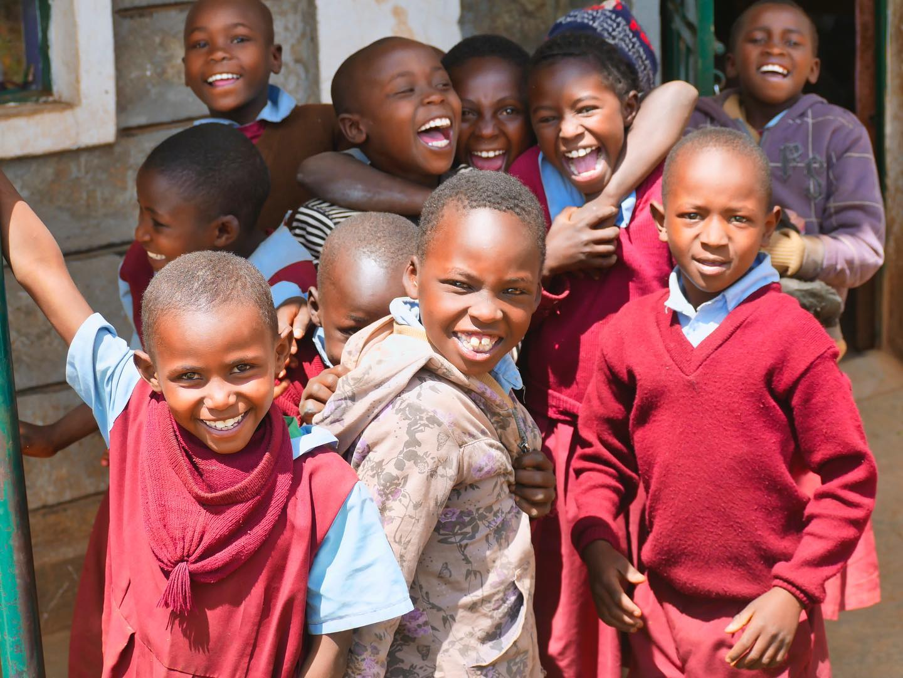
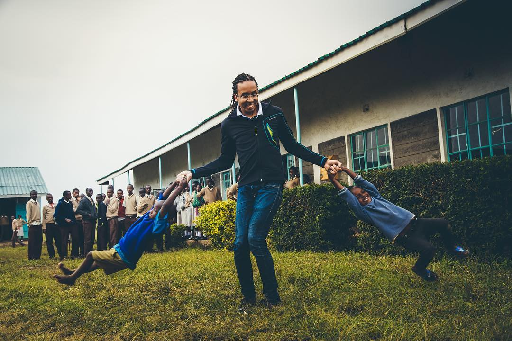

Philanthropy
Sébastien Night believes that business success creates a responsibility to give back.
Baraka Shalom Primary School — Kenya
Sébastien Night co-funded the construction and establishment of Baraka Shalom Primary School, located near Molo, Kenya. The project was realized in partnership with Village Impact Kenya, a non-profit organization dedicated to building schools and empowering rural communities across Kenya.
The school provides primary education to children in one of Kenya's underserved rural communities, giving them access to learning opportunities that would otherwise be out of reach.
From the School
A video from Baraka Shalom Primary School:
Photos from the School



📁 To add photos: place the 3 images in images/philanthropy/ folder as
barakashalom-school.jpg, barakashalom-students.jpg, and barakashalom-sebastien.jpg
About Village Impact
Village Impact is a charitable organization that works with communities in rural Kenya to build schools and improve access to education. They partner with individual donors and organizations to fund construction projects, teacher training, and community development initiatives.
Visit Village Impact website → Village Impact Kenya on Facebook
Support for Toit à Moi
Sébastien Night has been a long-time major donor and supporter of Toit à Moi, a French charity that helps disenfranchised people rent homes so they can find jobs and reintegrate into society.
2010: Community Donation
In this 2010 vlog video, Denis, the founder of Toit à Moi, explains their mission and receives a check from Sébastien's self-help community:
2012: Free Entrepreneur Movement Contribution
At this 2012 conference, the Free Entrepreneur Movement, along with Olivier Roland, contributed a significant donation to help Toit à Moi expand their impact: